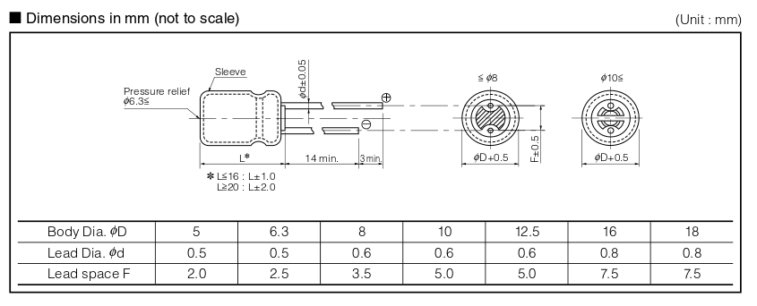

If you search digikey.com for capacitor, there are over 300,000 matches. Even if you search for a specific capacitance (in fact, this article assumes you are searching for a specific value for a PCB), say 10 pF, there are over 80,000 choices. How do you choose?
First, you must understand about the different types of capacitors and their common uses. Second, you must understand how caps are labeled. Finally, you can understand physical dimensions and which capacities are available in each physical package.
Ceramic capacitors are a sandwich of conductor sheets, alternated with layers of ceramic insulator material. The permitivity of ceramic materials is highly controllable and layer thicknesses are relatively large, so manufacturers can control the capacitance value easily.
Electrolytic capacitors use Aluminum Oxide (Al2O3) for the dielectric. Two long sheets of aluminum foil are seperated by a sheet of capacitor paper and rolled into a cylinder. The surface of the aluminum foil reacts to produce a thin aluminum oxide layer. The aluminum oxide is a good forward-insulator when it is in contact with electrolyte, but it can conduct easily in the other direction. One side of the capacitor paper is inpregnated with eletrolyte to create the insulation effect, giving electrolytic capacitors a forward-voltage polarity.
Tantalum capacitors are similar to electrolytic capacitors except they use the rare-earth metal tantalum instead of Aluminum. They are basically high end electrolytic capacitors.
You can usually tell from your schematic which type of capacitor is required because polar capacitors have a different symbol. Polar caps are symbolized with a straight plate and a curved plate. Non-polar caps are sybolized by two symmetric, parallel plates. Non-polar capacitors generally means a ceramic capacitor.
Electrolytic or Tantalum capacitors are usually used for decoupling near the power source. It is common to place a large electrolytic capacitor on either side of a voltage regulator on a PCB. Decoupling means shunting noise in the power supply; the inductance of a capacitor decreases as frequency increases, so they can be used as a short to ground for noise (which is high frequency). Larger capacities are used for decoupling near the power supply because
Larger capacitors will usually have their capacitance printed on the part, followed by the units, such as 47uF. Smaller capacitors may not have as much space for text, so they make use of capacitor codes. The codes have three digits and sometimes a letter. The first two digits are the significant digits and the third digit is the power-of-ten multiplier. The optional letter describes the tolerance %.
| Code | Capacitance | Conversion |
|---|---|---|
| 100 | 10 pF | |
| 101 | 100 pF | |
| 102 | 1,000 pF | (1,000 pF = nF) |
| 103 | 10 nF | |
| 104 | 100 nF | |
| 105 | 1,000 nF | (1,000 nF = uF) |
| 106 | 10 uF |

These are the capacitors I am using on my current circuit board, Deja-view. I try to order from Johansen Dielectrics because, as far as I can tell, it is the only American supplier on Digikey. Updated on 05/14/14.
| Digikey Part # | Value | Code | Technology | Manufacturer | Man. Part # | Package |
|---|---|---|---|---|---|---|
| 712-1341-1-ND | 33 pF | 330 | NP0 ceramic | Johansen Technology Inc | 251R14S330GV4T | 0603 SMD |
| 709-1004-1-ND | 100 pF | 101 | NPO ceramic | Johansen Dielectrics Inc | 500X14N101MV4T | 0603 SMD |
| 709-1150-1-ND | 470 pF | 471 | NPO ceramic | Johansen Dielectrics Inc | 500R14N471JV4T | 0603 SMD |
| 709-1151-1-ND | 1 nF | 102 | NPO ceramic | Johansen Dielectrics Inc | 500R14N102JV4T | 0603 SMD |
| 709-1021-1-ND | 10 nF | 103 | X7R ceramic | Johansen Dielectrics Inc | 501R15W103KV4E | 0805 SMD |
| 709-1161-1-ND | 0.1 uF | 104 | X7R ceramic | Johansen Dielectrics Inc | 500R14W104KV4T | 0603 SMD |
| 709-1224-1-ND | 1 uF | 105 | X5R ceramic | Johansen Dielectrics Inc | 250R14X105KV4T | 0603 SMD |
| 709-1063-1-ND | 2.2 uF | 225 | X5R ceramic | Johansen Dielectrics Inc | 100R15X225KV4E | 0805 SMD |
| 709-1230-1-ND | 4.7 uF | 475 | X5R ceramic | Johansen Dielectrics Inc | 6R3R15X475KV4E | 0805 SMD |
| 709-1229-1-ND | 10 uF | 106 | X5R ceramic | Johansen Dielectrics Inc | 160R15X106KV4E | 0805 SMD |
| P5178-ND | 10 uF | electrolytic | Panasonic Electronic Components | ECA-1HM100 | through-hole, see drawing below | |
| P12408-ND | 150 uF | electrolytic | Panasonic Electronic Components | EEU-FM1V151 | through-hole, see drawing below |
Panasonic 10uF and 150uF electrolytic capacitor mechanical drawing:
